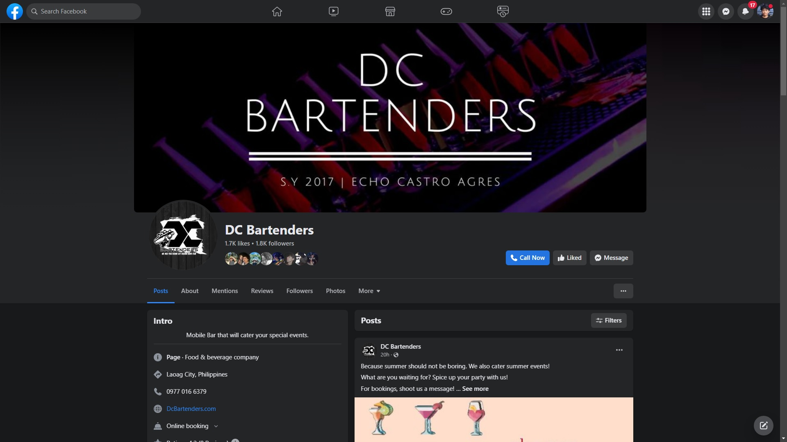

DC Bartenders is a professional bartending service company. We provide bartending services for various events and occasions, including weddings, corporate events, private parties, and more.
With a team of skilled and experienced bartenders, DC Bartenders aims to create a memorable and enjoyable experience for their clients and their guests.
Our services include crafting and serving a wide range of beverages, including signature cocktails, classic drinks, and customized drink menus tailored to the event theme or preferences.
The bartenders are knowledgeable in mixology, ensuring high-quality drinks and professional service.
DC Bartenders also offers assistance with event planning, including bar setup, inventory management, and consultation on drink selection and quantities. They prioritize customer satisfaction and work closely with clients to understand their requirements and provide a personalized bartending experience.
Overall, DC Bartenders strives to elevate the beverage service at events, providing professional bartenders, quality drinks, and excellent customer service to make any occasion a success.

visit our facebook page here. for more information!